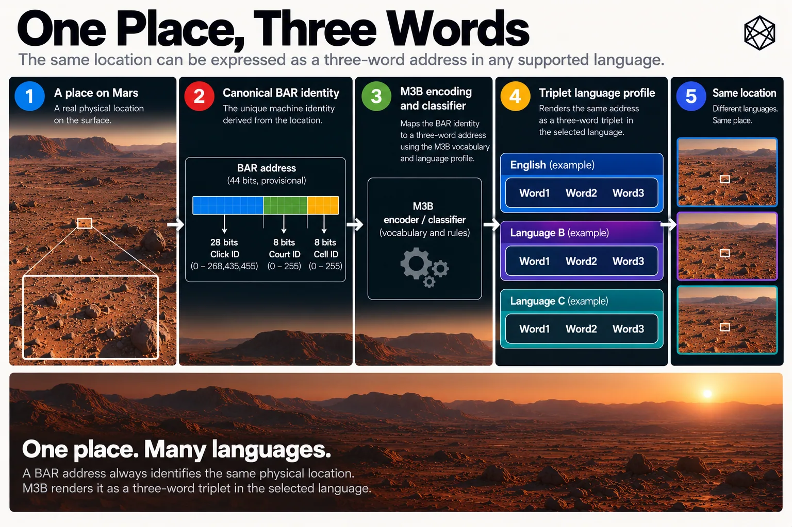
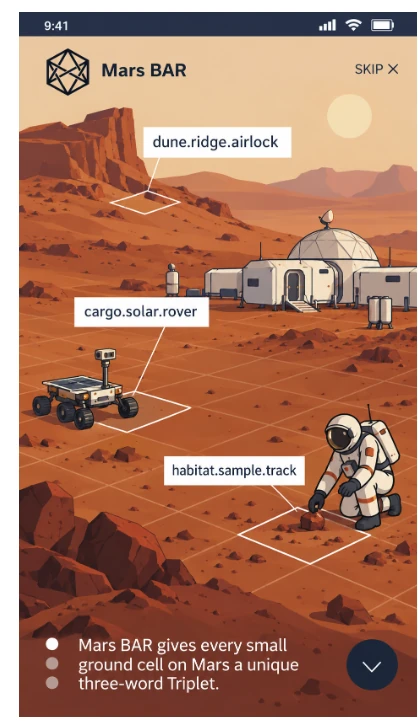
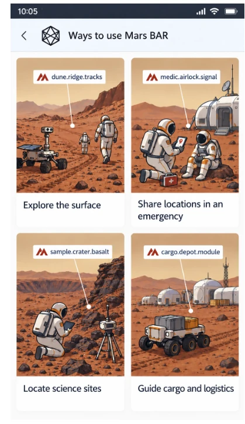
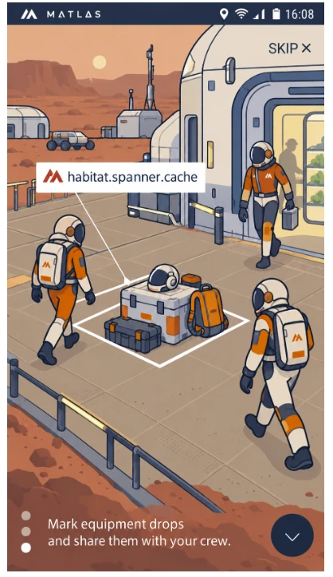

Three Words for Mars
Send me your Mars BAR
At the end of the last chapter, Bar had become precise enough for machines.
A position on Mars could be reduced to one Click, one Court and one Cell, then expressed as a deterministic forty-four-bit identity. The result was compact, reversible and independent of a central registry.
It was also a fairly dreadful thing to say aloud.

Read a description of this illustration
The intended layering is: physical location → canonical BAR machine identity → M3B language profile → three-word human rendering of the same location. The MB3-EN1 vocabulary and its production word assignments are not yet released.
That matters because addresses eventually escape databases. A technician reads one over a radio. An emergency caller repeats one under stress. Somebody copies one from a screen. A visitor remembers one long enough to walk across a settlement. A human notices that something sounds wrong before pressing send.
Machines need canonical identity. People need language.
The final layer of Bar is therefore not another piece of geography. It is a human interface laid over geography that already exists.
It is called Triplet.

Read a description of this illustration
A mobile interface displays Triplet labels over a surface scene, showing how small ground cells can be marked for field exploration and day-to-day operations.

Read a description of this illustration
A multi-card interface illustrates several practical Triplet uses, including exploration, emergency response, science work and cargo guidance.

Read a description of this illustration
A habitat-side example shows Triplet being used to mark a precise equipment drop or logistics point close to an airlock.
The words are not the place
A Bar Cell exists whether or not anybody has assigned English words to it. Its canonical identity comes from GRID and Bar geometry, not from language.
Triplet takes that existing identity and renders it as three words:
W1 · W2 · W3
Another language can use different words. A specialist interface could use something else entirely. Future software may display a building name instead when one is available.
None of those choices moves the Cell.
This separation matters because language changes much faster than geography. Vocabulary becomes dated. Pronunciations shift. Particular words turn out to be awkward across accents. A better speech-recognition system may expose problems that were invisible when the first profile was designed.
If the words are the geography, changing them becomes dangerous. If the words are an interface to a stable Bar identity, they can improve while the place remains put.
The place is canonical. The words are an interface.
Triplet is the public three-word interface. The classifier and encoding system underneath it is called M3B. The engineering identifier for the first US-English profile is MB3-EN1.
Most readers will never need the last of those names. Implementers will.
Three words is not a new idea
The obvious comparison is what3words.
That system demonstrated something important on Earth: three ordinary words can make a very small piece of a planet much easier for a human to communicate than a long coordinate or machine identifier. That central insight is excellent, and Bar keeps it.
The differences begin underneath.
what3words is a proprietary addressing system. Its word combinations are allocated through a commercial architecture, and the words themselves do not carry geographical meaning. A perfectly valid address may sound no more geographically plausible for London than for Lagos.
The system does make serious efforts to reduce dangerous similarity among nearby addresses, and it uses language-specific vocabularies rather than crude word-for-word translation. Those are sensible design choices. Bar adopts the principles where they help.
Mars nevertheless gives us an opportunity to ask a slightly different question. If we are designing a planetary address layer before the planet has billions of existing addresses, can the words do more than merely provide enough combinations? Can they help somebody notice an error, carry some geographical context, remain independently reproducible and make confusion resistance part of the structure itself?
Triplet is an attempt to answer yes.
The first word tells you something
The first word is not drawn from one enormous undifferentiated vocabulary. Its semantic family depends on where the location lies on Mars.
For most of the planet, GRID already gives us four broad latitude regions: the Blue, Green, Gold and Red Belts. Triplet assigns one W1 semantic family to each:
GRID region | Latitude | W1 family |
|---|---|---|
Blue Belt | 30°–72°N | Action |
Green Belt | 0°–30°N | Living |
Gold Belt | 0°–30°S | Made |
Red Belt | 30°–72°S | Nature |
An address in the Blue Belt therefore begins with an Action word. Green begins with Living, Gold with Made, and Red with Nature.
These are categories of vocabulary, not descriptions of the landscape. An Action word does not mean anybody is actually running, lifting or building at that location. A Nature word does not imply the Cell contains a tree, which would be an ambitious inference on present-day Mars.
The semantic family is an encoding cue. It tells the listener something about the broad geography of the address before the address has even been fully decoded.
The two polar Quads receive their own first-word families: Crown in the north and Root in the south.
That gives all six broad W1 regions deliberately different semantic character. A first word that clearly belongs to Living should therefore look suspicious if somebody claims the address lies in the southern mid-latitudes.
The words begin doing error detection before software gets involved.
The second word turns the planet
Latitude is only half the broad geography.
Mars is also divided into twenty-four 15° longitude Zones. For Triplet, four adjacent Zones are grouped into one 60° sector.
Across regular Mars, those six sectors use six W2 semantic families:
Longitude | W2 family |
|---|---|
0°–60°E | Person |
60°–120°E | Home |
120°–180°E | Settlement |
180°–240°E | Journey |
240°–300°E | Land |
300°–360°E | Sky |
Combine W1 and W2 and the broad regular Quad is already apparent.
Suppose a Triplet begins with an Action word followed by a Settlement word. Action tells us 30°–72° north. Settlement tells us 120°–180° east.
Before examining the third word — indeed before fully decoding the first two — we already know the general part of Mars to which the address belongs.
That is not enough to locate a Cell. It is enough to make nonsense easier to spot.
An example
Take a location at approximately:
41°N, 140°E
Forty-one degrees north lies in the Blue Belt, so its first word must come from Action. One hundred and forty degrees east falls in the 120°–180° sector, so its second word must come from Settlement.
The resulting Cell address therefore has the structure:
[Action word] · [Settlement word] · [Cell word]
The exact three words depend on the location's full Bar identity, its finer GRID context, its Safety Signature and the final lexical assignment. But the semantic grammar is already fixed.
If somebody transcribes the first word as something from Living, the result has crossed from northern mid-latitude Mars into northern low-latitude Mars before we have considered anything else. If the second word changes from Settlement to Sky, the address has apparently travelled more than a hundred degrees of longitude.
That is useful information for a human.
A random three-word assignment cannot offer it.
The poles need their own vocabulary
The polar regions are different enough geometrically that GRID already treats them separately. Triplet does the same semantically without creating a different address grammar.
At the North Pole, W1 is Crown. Longitude then selects among six W2 families:
Thought, Sound, Light, Air, Cosmos, Time
At the South Pole, W1 is Root, followed by:
Growth, Soil, Stone, Ore, Heat, Core
So a location at roughly 80°N, 250°E has the grammar:
[Crown word] · [Cosmos word] · [Cell word]
while a location at 80°S, 90°E becomes:
[Root word] · [Soil word] · [Cell word]
Again, the words do not describe the terrain. Cosmos is not claiming that the northern polar site has a particularly fine view of the heavens, and Soil does not certify agricultural potential in the south.
They are mnemonic namespaces.
The point is not poetry. It is distinction.
Bands and Zones still matter
The semantic families are deliberately broad.
They do not reduce every regular Band to one visible vocabulary list or every Zone to a single obvious set of second words. That would make the system intuitive at first glance but would not provide nearly enough safe combinations for the full address space.
The finer GRID structure instead participates in the deterministic lexical encoding beneath the visible semantic family.
There is a useful piece of geometry behind this. Action and Nature each span seven six-degree Bands, while Living and Made span five. That is why the W1 vocabularies do not all require the same capacity. Each regular W2 family, by contrast, spans four adjacent 15° Zones, producing one 60° longitude sector, so the six regular W2 namespaces can be equal-sized.
The reader therefore gets two levels of information at once. At the visible level, the first two words provide broad geographic orientation. Underneath, the exact Band, Zone, Click position and Bar Cell help determine which valid word inside those semantic namespaces is assigned.
The result is not a sentence describing the location.
It is structured redundancy, and redundancy is valuable when humans are involved.
The third word does most of the fine work
W3 completes the address.
For a normal Cell Triplet, it comes from the Cell vocabulary. Unlike W1 and W2, its principal job is not broad geographic orientation because by the time the system reaches W3 much of the relevant context has already been established.
This allows the same surface word to be reused carefully in different parts of the encoding space where the decoder already knows which context applies. That is important because English does not contain an unlimited supply of short, familiar, pronounceable, semantically harmless and acoustically distinct words.
A naïve three-word system can pretend the dictionary is larger than it really is. An operational one cannot.
Triplet therefore treats vocabulary as a finite engineering resource. Words can be reused where the context makes the reuse unambiguous; they cannot be reused carelessly inside the context where they compete.
Courts get a special ending
A Cell is not always the most useful human reference.
Sometimes the intended destination is a Court: a site-sized area of roughly tens of metres rather than one particular few-metre Cell. Triplet handles that without inventing another address syntax.
Court-level addresses use the same first two words, but W3 comes from a dedicated Place/Structure vocabulary reserved for Courts.
So a Court at roughly 20°S, 70°E has the structure:
[Made word] · [Home word] · [Place/Structure word]
A Cell inside that same Court uses a normal Cell W3 instead.
The final word can therefore reveal whether the address refers to the wider Court or the precise Cell within it. The Court vocabulary remains exclusive: a Place/Structure ending is not quietly reused as an ordinary Cell ending elsewhere in the same English profile.
That keeps the distinction clean.
The dangerous words problem
At this point the design stops being primarily about dictionaries and becomes about mistakes.
Human language contains many words that are perfectly acceptable in ordinary conversation and terrible in an address system. Some are exact homophones:
course / coarse
plane / plain
root / route, in accents where they converge.
Others differ by one sound, one letter or one morphological ending. Some are visually similar when typed, some become close when spoken quickly, and some are easy for a particular speech-recognition system to confuse.
Accent adds another layer. Words that are comfortably distinct for one speaker may converge for another. A word may also be technically valid and simply too obscure: a caller who has never encountered it is more likely to hear the familiar word they expected than the unfamiliar one actually spoken.
A word list that looks excellent on a spreadsheet can therefore behave rather badly over a radio.
Triplet treats that as a first-order design problem.
Familiar is not enough
Common vocabulary is generally helpful. A familiar word is easier to recognise, easier to repeat and less likely to be silently replaced by something the listener already knows.
But frequency alone does not make a word safe. Two extremely common words can be dangerously similar. A less common word may be exceptionally distinctive. A familiar word may have several unrelated senses that weaken its semantic classification, while a short word may be easy to remember and poor over noisy audio.
M3B therefore does not rank vocabulary on one dimension.
The first English profile draws on three principal public lexical resources.
Open English WordNet provides senses and semantic relationships.
BNC/COCA frequency data provides evidence about familiarity and ordinary use.
CMUdict provides General-American pronunciation data.
US English is used as the canonical spelling profile, with explicit spelling normalisation rather than broad guesses about how British forms ought to be Americanised.
The purpose is not linguistic perfection. It is reproducibility.
If two people build the English vocabulary compiler from the same frozen sources and rules, they should start from the same evidence.
Semantics has to be real
The W1 and W2 categories would be pointless if words were placed into them merely because capacity was needed.
An Action word should have a defensible action-related sense. A Home word should have a defensible home-related sense. A Stone word should genuinely belong to the Stone family.
The system does allow a word to appear in more than one semantic family where its senses genuinely justify it. Natural language overlaps, and trying to force every English word into exactly one conceptual drawer would create artificial scarcity and some fairly tortured definitions.
What matters is that the classification is defensible.
A word is not admitted into Nature because an algorithm ran out of Nature vocabulary and the word once appeared within three links of forest in a lexical graph.
Capacity is an engineering constraint.
It does not get to rewrite English.
Pronunciation matters as much as spelling
Every production word in the English profile must have usable pronunciation evidence.
Exact homophones are especially important. If two spellings sound identical inside a decoding context, preserving both does not create useful additional vocabulary; it creates two ways to make the same noise and hope the listener guesses correctly.
The compiler therefore collapses exact homophones where they could compete.
Near-homophones require more judgement. A useful first test is phonetic edit distance: how many individual sound changes separate one pronunciation from another? One-phoneme neighbours deserve attention, but that test is not sufficient by itself.
Pronunciation dictionaries simplify accents. People reduce speech under stress. Radio channels lose detail. Automatic speech recognition has its own peculiar confusions.
Phonetic distance is therefore treated as one layer in a broader confusability graph, alongside spelling, morphology, accent evidence and, where available, real speech-recognition evidence.
This is one of the places where the engineering work becomes less glamorous and more useful.
A three-word address system is only as good as the mistakes it prevents.
Safety Groups
The more distinctive part of M3B is that confusable words are not merely identified. Their placement is constrained by the geography.
Every Click receives a deterministic Safety Colour derived from its position. Sixteen colours are sufficient to ensure that directly neighbouring Clicks do not share the same colour.
The colour is not something a resident needs to see painted across the map. It is encoding state.
Within the Click, the Cell contributes its fine row and fine column. Together, those values form a Safety Signature describing the local context in which the lexical address will be interpreted.
M3B then divides the W1, W2 and W3 vocabularies into Safety Groups associated with parts of that signature.
W1 uses 32 Safety Groups.
W2 uses 32 Safety Groups.
Cell W3 uses 1,024 Safety Groups.
Court W3 has its own smaller group structure.
The important idea is not the arithmetic. It is what the grouping lets us do.
Put confusion where it cannot hurt locally
Suppose two words are judged dangerously similar.
A naïve strategy might try to place them as far apart on Mars as possible. That helps, but it is surprisingly hard to make a universal guarantee from distance alone. Every vocabulary evolves, every language has awkward pairs and a planetary allocation eventually contains a great many combinations.
M3B takes a more structural approach.
Confusable alternatives are kept inside the same relevant Safety Group rather than scattered across groups that could represent neighbouring local states. Because adjacent Clicks have different Safety Colours, and because fine position contributes to the Safety Signature, a substitution among words deliberately grouped as confusable is prevented from casually turning into a neighbouring valid address.
The system is therefore not merely asking:
How far apart can we place similar words?
It is also asking:
Can we arrange the encoding so that the most dangerous substitutions are structurally unable to mean the place next door?
Longer-range geographic separation can still be improved during final assignment.
But local safety is not left entirely to luck.
Why that matters in an emergency
Imagine an emergency caller repeats a Triplet and one word is misheard.
The worst failure is not necessarily an address that fails to decode. That is annoying, but visible.
The more dangerous failure is a different address that looks completely valid and lies just far enough away for responders to go to the wrong side of a building or the wrong piece of open terrain.
The semantic families reduce one kind of error. Safety grouping attacks another. Software can add a third layer by presenting context, suggesting alternatives or warning when an entered address disagrees strongly with the user's approximate location.
These mechanisms complement one another.
No address architecture should promise that humans will never make mistakes. It should make ordinary mistakes less likely to become silently plausible destinations.
The vocabulary has to fit the geometry
The lexical architecture is large enough that intuition alone cannot populate it.
The current English design requires tens of thousands of word memberships across W1, W2 and W3. Membership is not the same as distinct spelling: a word can legitimately appear in separate decoding contexts where the context itself prevents ambiguity.
This is particularly important for W3, where carefully controlled reuse keeps the distinct vocabulary burden manageable.
The target architecture contains six W1 families:
Action, Living, Made, Nature, Crown, Root.
Regular W2 contains:
Person, Home, Settlement, Journey, Land, Sky.
Polar W2 adds twelve specialised families:
Thought, Sound, Light, Air, Cosmos, Time, Growth, Soil, Stone, Ore, Heat, Core.
W3 supplies the large Cell vocabulary, plus 256 dedicated Place/Structure endings for Court addresses.
The final vocabulary therefore cannot sensibly be curated by one person scrolling through a dictionary and ticking attractive words.
It needs a compiler.
Building the English profile
The MB3-EN1 compiler begins by freezing its source material. A vocabulary cannot be called reproducible if today's run silently uses a newer dictionary, a changed frequency list or a revised pronunciation source.
The compiler then normalises candidate spellings into the canonical US-English profile and applies basic form rules. The current design requires alphabetic words of at least four letters.
Each surviving word becomes part of a master lexical ledger recording the things later decisions need: spelling, lemma, morphological family, senses, semantic evidence, familiarity, pronunciations, syllables, phonetic signatures, spelling similarity, Court suitability, sensitivity flags and source provenance.
Then the actual selection begins.
W1 and W2 candidates are scored against their semantic families. Court and Cell candidates are separated. Exact homophones are collapsed inside the contexts where they would compete, and confusability relationships are built.
Candidate pools are deliberately larger than the production requirement so that weak words can be replaced without destabilising the whole system.
Only then are words packed into Safety Groups.
Do not curate eighty thousand slots by hand
This part of the project produced an important practical lesson.
At first glance, a system containing tens of thousands of lexical memberships appears to require tens of thousands of individual editorial decisions. That would be an excellent way to spend several months becoming unusually well acquainted with obscure English nouns.
It is also unnecessary.
The right unit of human attention is the exception, not the word.
Most mechanical rejection should be mechanical. Most obvious semantic classification should be reproducible. Most pronunciation checks should be automated. Most Safety-Group packing should be deterministic.
The compiler should handle the ordinary cases and produce a relatively small queue where evidence genuinely conflicts or judgement is required.
Human review then concentrates on questions algorithms are bad at: whether a word is actually familiar; whether its semantic sense feels natural rather than merely defensible by lexical archaeology; whether it is awkward or offensive in ordinary use; whether a technically acceptable pronunciation pair still feels unsafe; or whether a candidate is simply too specialist for broad use.
That division of labour matters if Triplet is ever extended into other languages.
A language profile should be engineered and reviewed.
It should not become a lifetime craft project.
Reserves matter
A mature vocabulary also needs spare capacity.
Suppose a word passes all of today's tests and later proves awkward in a particular accent, or speech-recognition testing finds a confusion pattern not visible in the original pronunciation graph. If every semantic family has been filled to exactly the minimum required size, replacing one word becomes painful.
The compiler therefore creates reserve pools as part of the release process.
A weak or conflicting production candidate can be replaced from reserve and the affected Safety Group rebuilt without reopening the whole language profile.
This is mundane release engineering. It is also how standards remain maintainable.
A vocabulary with no slack has confused mathematical sufficiency with operational resilience.
Assignment comes last
Only after the vocabulary has passed its semantic, familiarity, pronunciation, morphology, confusability and capacity tests should the exact word assignments be frozen.
This is where the Assignment Salt appears.
The salt is public. It is not a secret security key.
Its purpose is to create one reproducible deterministic permutation inside the already-valid semantic and Safety architecture, rather than allowing implementation order or source-list order to decide which exact Cell receives which word.
Because it is public, independent implementations can reproduce the same assignment. Because it is frozen only after the lexical release passes, changing a candidate word during curation does not needlessly disturb a supposedly final planetary mapping.
The sequence matters:
qualify the vocabulary first; assign it second
That avoids a great deal of avoidable pain.
Different language, same Cell
English is only the first profile.
It should not become the linguistic constitution of Mars.
A future Spanish Triplet profile should not be produced by translating each English word. Nor should Mandarin, Arabic, Hindi or any other language be forced into English phonetic assumptions.
Each language has its own frequency distribution, morphology, pronunciation, writing system and ambiguity. A good language profile therefore designs its own vocabulary and Safety Groups while resolving to the same canonical Bar identity.
The English Triplet for a particular Cell might contain three completely different concepts from the Arabic Triplet for that Cell.
That is fine.
The two speakers still mean the same few metres of Mars.
This is exactly why the machine identity sits underneath language. Multilingualism is difficult if words are the address; it is much cleaner if words are interfaces to the address.
Not a naming system
Three words can feel like names, which makes another boundary important.
Triplet does not culturally name the Martian surface.
An address such as:
[Action word] · [Settlement word] · [Cell word]
does not declare that the location should henceforth be known by those words. Nobody is expected to fall in love with a crater because a deterministic vocabulary compiler happened to allocate carry-harbour-lantern to one Cell inside it.
Future inhabitants will name settlements, streets, hills, cafés, neighbourhoods and the unofficial shortcuts between them. Those names will carry memory and meaning that no protocol should try to manufacture.
Triplet has a more modest job: it lets somebody who does not know the local name still communicate the exact Bar location.
That keeps the principle established earlier in the book intact:
We name the grammar. Martians name the places.
Local addresses should usually win
A mature Martian city should not force everyone to speak Triplet all day.
If the café is on Copernicus Lane, people should say Copernicus Lane. If the western cargo airlock is locally called Lock Three, logistics software should be perfectly capable of displaying Lock Three. If a hospital has Ward 6, Room 14, the patient should not be reduced conversationally to a Triplet because the global addressing system happens to know where the room sits.
Bar lives underneath those systems.
Triplet becomes valuable when local systems do not exist, when organisations need to interoperate, when a precise fallback is required or when the user needs a human-friendly representation of the canonical location.
The best universal infrastructure often spends much of its life hiding beneath better local interfaces.
Chapter 19 will return to that point.
Open means more than published
There is one final difference between a useful three-word interface and infrastructure.
The system has to be reproducible by somebody other than its inventor.
When the English profile is complete, the public GitHub repository should contain the information required to rebuild and inspect it: source manifests, frozen lexical evidence, semantic rules, vocabulary memberships, Safety Groups, Assignment Salt, conformance vectors and reference implementations.
The exact production word lists should be downloadable. The classification rules should be inspectable. The machine encoding should be public.
A second implementation should be able to take the same Bar identity and derive the same Triplet without asking the original project for a lookup. Likewise, it should be possible to decode the Triplet back to the same Bar Cell offline.
That is a higher bar than publishing an API.
An API makes a system available.
A specification makes it reproducible.
Both are useful. Only one is enough for infrastructure intended to outlive its first provider.
The test is not whether the words are clever
Triplet will eventually attract attention because three-word addresses are visible. That is natural; the binary identity beneath them is unlikely to feature prominently in dinner conversation.
But the success of the design should not be judged by whether individual word combinations sound charming.
Some will. Some will sound peculiar. With trillions of possible locations, literature was never a realistic requirement.
The meaningful tests are operational: can people distinguish the words and remember them long enough to use them? Do semantic families help catch errors? Does the Safety architecture reduce dangerous local substitutions? Can speech-recognition systems handle the vocabulary? Do different accents expose weaknesses? Can another implementation reproduce the same result?
Those questions require testing, not admiration.
Triplet is designed to be usable.
It will still need to prove that it is.
The whole stack
We can now put Part IV together.
GRID carries us from Mars to the kilometre. Bar takes the final Click and divides it into Courts and Cells. The canonical Bar identity gives each Cell a compact forty-four-bit machine reference.
Triplet renders that identity into three words, while M3B determines how those words are classified, checked and assigned.
The result is not one address format trying to satisfy every possible user. It is a stack.
Machines can carry the canonical identity. Humans can speak Triplet. Local systems can display whatever names make sense to local people. Coordinates can continue doing precise measurement underneath them all.
Each layer solves the problem it is actually good at.
At the beginning of Part IV, an astronaut in distress could be narrowed down to the correct kilometre of Mars.
Now the same event can resolve to a few-metre Cell, carry one stable machine identity and, when a human needs to say it, become three ordinary words.
The words are not the geography. They are how the geography speaks.